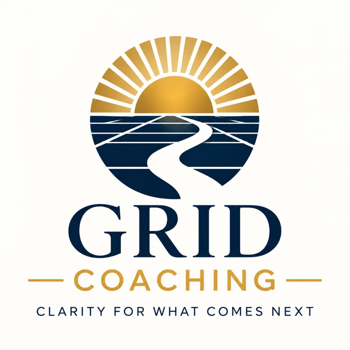

Feeling stuck
Life feels repetitive or out of balance. You want to understand what's holding you back and find a way forward.

You don't have to have all the answers.
Personal and professional coaching to help you find clarity, regain direction and move forward with confidence.
Book a free Discovery CallClarity for what comes next.
Sometimes you know something needs to change, but knowing what to do next is the harder part.
Life feels repetitive or out of balance. You want to understand what's holding you back and find a way forward.
You're questioning your professional direction, considering a career change or looking for work that better reflects your values.
A change in circumstances has left you questioning your identity, priorities or what the next chapter might look like.
You want greater confidence, clearer goals and the accountability to turn good intentions into meaningful action.
Coaching is a collaborative process. I bring structure, curiosity and constructive challenge; you bring your experience, values and ambitions.
Understand what matters, explore your current situation and recognise what may be holding you back.
Explore possibilities, challenge assumptions and define a direction that feels meaningful to you.
Translate insight into practical steps, build accountability and make sustainable progress.
After more than 25 years in technology and professional leadership, I understand the challenges of navigating change, making complex decisions and questioning what comes next.
Today, through Grid Coaching, I help people explore their personal and professional direction. My approach combines reflective questioning, structured thinking and practical action.
I won't prescribe a life for you. I'll work alongside you to help you discover what matters and make decisions that are right for you.
Choose the next step that feels right for you.
Explore what brings you to coaching, ask questions and see whether we're a good fit.
A focused conversation to explore a specific challenge, gain perspective and identify possible next steps.
A series of sessions for deeper exploration, personal development and accountability over time.
Session options, fees and arrangements can be discussed during your discovery call.
Approaching retirement or already navigating life beyond your career? Explore the psychological side of retirement, rediscover your identity and deliberately design your next chapter.
Retire by design, not by default.
Explore Identity after Work →No. Exploring what matters and identifying a direction can be part of the coaching process.
Coaching helps you explore options, challenge assumptions and make your own informed choices. We can work together on practical next steps.
No. Coaching is not counselling, psychotherapy or clinical mental health treatment. If your needs are outside the scope of coaching, other professional support may be more appropriate.
No pressure. No commitment. Just an opportunity to explore where you are and what comes next.
Book a free Discovery CallOr email hello@gridcoaching.com